Who this is for
- You're learning UI/UX. You get the whole process in one place, the output of each step, and what to show in a case study.
- You're about to build something. A founder, a developer, a small business owner. You get a one-week plan that stops you from building the wrong thing well.
- You already design for clients. You get checklists with real numbers: text sizes, contrast, tap targets, how many people to test with.
The examples come from my own work this autumn: I study the websites of private clinics in Moscow, then build booking pages and demo sites for them. Before any demo goes to a clinic owner, I score it out of 10. More on that scoring further down.
Tip: on a phone, tap any sketch to open it full size.
UX and UI in one minute
UX (user experience) is whether the thing works for the person using it. Can they find what they came for? Can they finish the task? Do they trust it? Did it solve their problem?
UI (user interface) is the surface they touch: layout, spacing, type, colour, buttons and what those buttons do when you tap them.
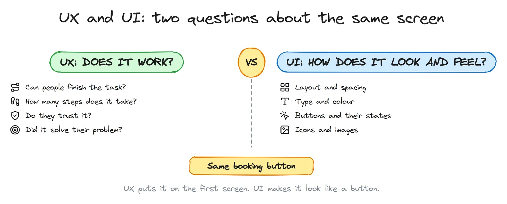
UX decisions come first. A beautiful screen for the wrong task is still the wrong screen. Here is a real case: one clinic site I studied looks calm and modern. On a phone, the first booking button is on the 8th screen, and the first phone number you can tap is on the 12th. Good UI, broken UX. Most patients will never scroll that far.
The map: design thinking
Design thinking is a way of solving problems that starts with people, not with features. The version most courses teach comes from the d.school at Stanford, and it has five modes:
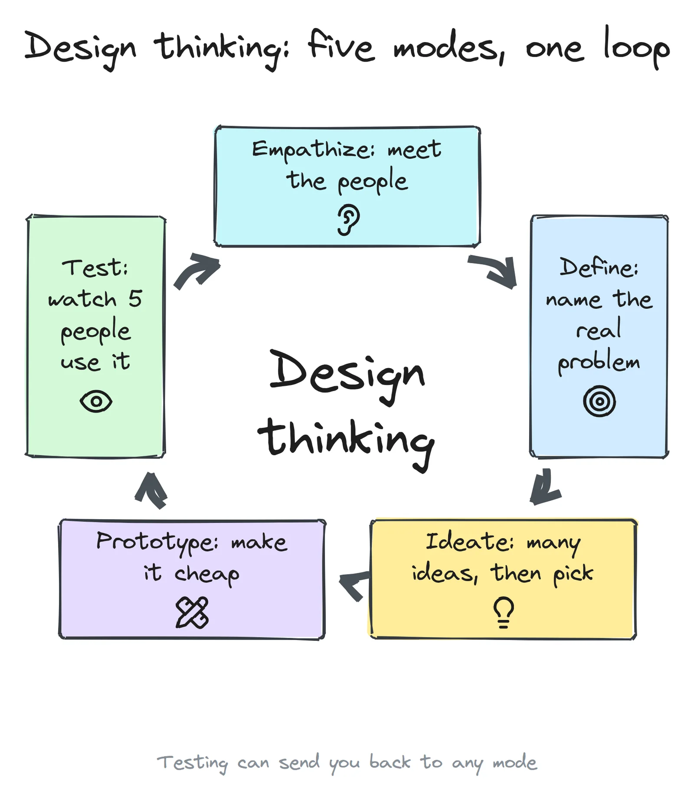
- Empathize: meet the people you design for and watch what they actually do.
- Define: turn what you saw into one clear problem.
- Ideate: come up with many possible solutions, then choose.
- Prototype: make the chosen idea real enough to try, as cheaply as you can.
- Test: put it in front of real people and watch where it breaks.
A second picture helps with the rhythm. The UK Design Council's Double Diamond (2005) shows the same work as two diamonds: you go wide, then narrow, twice.
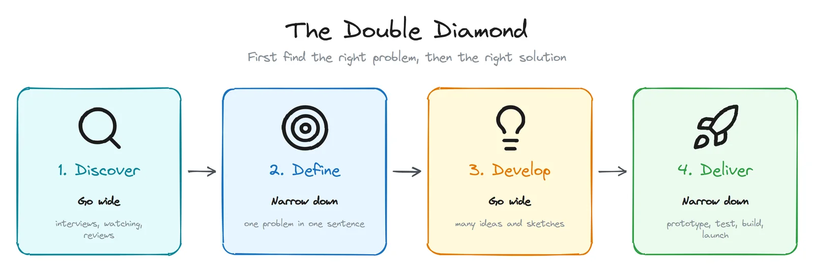
Most projects that fail skip the first diamond. They take the first problem someone named ("we need an app") and go straight to solutions. The table shows how the two models line up, and what you should have in your hands at the end of each phase.
| Phase | Design thinking mode | What you have at the end |
|---|---|---|
| Discover | Empathize | Notes from 5 or more interviews, people's own words, screenshots of how others solve it |
| Define | Define | One problem statement, 3 to 5 "How might we" questions, a short persona |
| Develop | Ideate, Prototype | Sketches, a user flow, wireframes, a clickable prototype |
| Deliver | Test, then build | Test notes, a fix list, version 1, and the numbers you'll watch |
Step 0: write a one-page brief
Before any research, write down what you believe. It will be wrong in places, and that's the point: research needs something to test. Keep it to one page, so you actually reread it.
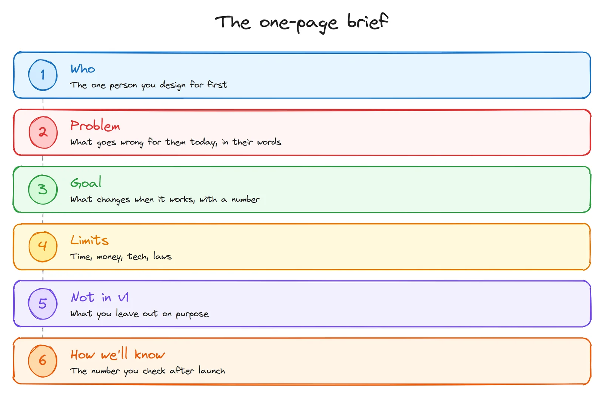
Here is a filled example for a booking page for a small clinic:
| Who | A working parent booking a check-up for a child, on a phone, in the evening |
| Problem | The clinic only books by phone, 9:00 to 18:00. In the evening nobody answers, and by the morning the parent has forgotten |
| Goal | Half of all bookings made online within three months (an example target: pick your own) |
| Limits | No budget for a new site this year, so it has to work on the current one. Patient data stays in Russia |
| Not in v1 | Patient accounts, online payment, loyalty points |
| How we'll know | Online bookings per week, and how many booked patients don't show up |
Step 1: Empathize. Research that costs almost nothing
You don't need a budget or a lab. You need about five conversations and a notebook.
Talk to 5 people who have the problem
Thirty minutes each. Ask about the last time they did the thing, not about what they would like. People are bad at predicting what they'll do, and good at telling you what they did.
| Ask this | Not this |
|---|---|
| "Tell me about the last time you booked a doctor." | "Would you use an app for booking?" (people say yes to be polite) |
| "What happened next?" | "Don't you think online booking is easier?" (you gave them the answer) |
| "What was annoying about it?" | "Do you like this design?" (they'll say yes) |
| "What did you do instead?" | "How much would you pay for it?" (nobody knows) |
Write down their exact words. "I called twice and gave up" is worth more than your summary of it.
Watch them do it
Ask them to do the task on their own phone while you watch. You'll see the moment they hesitate, the thing they tap by mistake, the tab they open to check a price. People don't mention these in interviews, because they don't notice them.
Read reviews, especially the 3- and 4-star ones
Five-star reviews say "great". One-star reviews are often angry. The middle ones are specific. One clinic I studied is rated 5.0 on the maps, and its only two reviews below five stars were both about the same thing: a price the patient learned only at the end. That's a design problem, and no interview would have found it so fast.
Walk through 3 competitors
Do the same task on three competitor sites. Screenshot every step and count the taps. Look outside your field too: for booking, airlines, banks and taxi apps have solved the same problem many times.
Step 2: Define. Name the real problem
Now you have pages of notes. Put each observation on a sticky note (paper or digital), then group the notes that belong together. This is called affinity mapping. The groups that keep growing are your real problems.
Write one problem statement
Use this shape: [who] needs a way to [do what], because [what you learned].
Example: "Working parents need a way to book a check-up in the evening, because the clinic's phone line closes at 18:00 and they forget by morning."
Make a short persona, not a novel
A persona is a reminder of who you're designing for. Skip the invented hobbies. Keep what changes design decisions: what they're trying to do, where and on what device, what worries them, and what they use today.
Write job stories
When [situation], I want to [action], so I can [outcome].
"When my child's tooth hurts in the evening, I want to book the first free slot from my phone, so I don't have to remember to call in the morning."
Turn insights into "How might we" questions
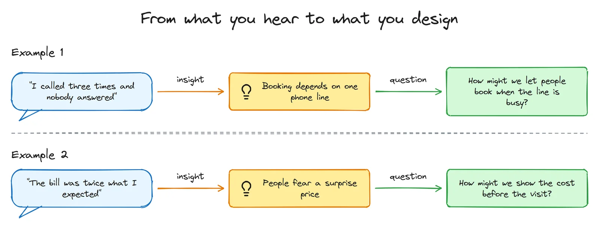
A good "How might we" question sits in the middle. "How might we improve healthcare?" is too wide to act on. "How might we add a chatbot?" already contains the answer. "How might we show the cost before the visit?" leaves room for many solutions: a price list, a calculator, a price in the booking confirmation.
Step 3: Ideate. Many ideas first, then cut hard
The first idea is rarely the best one. It's just the first. So generate many before you judge any.
- Crazy 8s: fold a sheet of paper into 8 boxes and sketch 8 ideas in 8 minutes. It comes from the Google Ventures design sprint. Ugly is fine. Speed stops you from falling in love with idea number one.
- Sketch alone, then share. Groups that brainstorm out loud tend to follow the loudest person. Silent sketching first gives you more, and more different, ideas.
- Steal the pattern, not the design. How does a taxi app show the time until arrival? Could a clinic show "next free slot: today 18:30" the same way?
- Vote with dots. Everyone gets three dots to put on the ideas they'd build. Then decide.
Then cut to version 1. Sort every feature into three groups: must, next, later. A popular name for this is MoSCoW: must, should, could, won't.
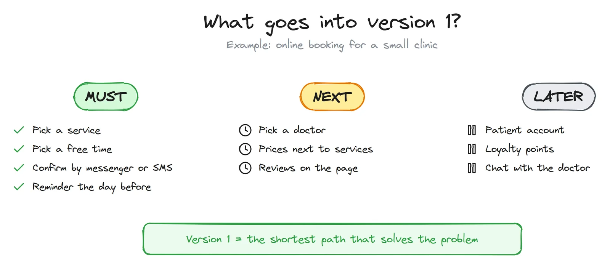
Version 1 should feel a little too small. If it doesn't, it's too big.
Step 4: Structure before screens
Draw the user flow
A user flow is every step from the moment someone has the need to the moment it's solved. Draw the happy path first. Then, under each step, write the reason someone might leave there.
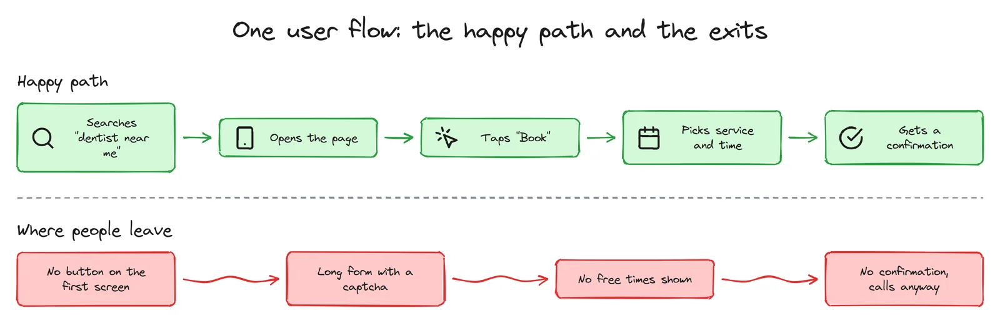
Three of those exits I found on a single well-rated clinic site: no booking button on the phone's first screen, a captcha in the booking form, and a form that takes a name and a phone number but doesn't let you choose a doctor, a day or a time. The same site has a "Prices" page with no prices on it. Each one is a small UX decision, and each one costs bookings.
Then the site map
List every page you need, group them, and name the menu items with the words your users used in interviews, not your internal names. "Prices" beats "Our tariff policy". Fewer, clearer choices are faster to scan: the more options people see at once, the longer they take to decide (Hick's law).
If you're not sure how people would group your pages, try card sorting: write each page on a card and ask five people to sort the cards into piles and name them.
Step 5: Wireframes. Grey boxes, phone first
A wireframe is the layout without the look: grey boxes, real headings, grey lines where the text will go. Keep it rough on purpose. When a screen looks finished, people comment on the colours. When it looks like a sketch, they comment on the structure, which is what you need at this stage.
Start with the phone. A narrow screen forces you to decide what matters most, and for many businesses, local ones especially, most visitors come from a phone. A layout that works on a phone usually grows to a laptop easily. The reverse is painful.
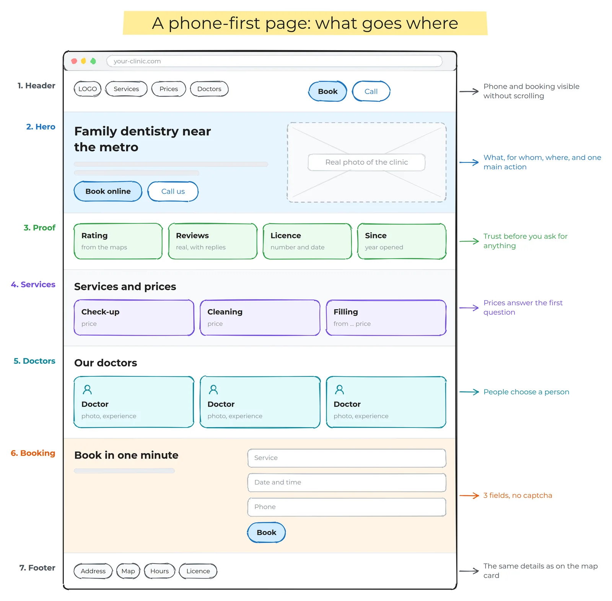
Before you add any colour, run the 5-second test: show the first screen to someone for five seconds, then hide it. Can they say what it is, who it's for, where it is, and what to do next? If not, fix the headline and the main button before anything else.
Tools: paper and a pen are honestly enough. Digitally, Excalidraw (free) for quick sketches, Figma (it has a free plan) or Penpot (open source and free) for wireframes and prototypes.
Step 6: Visual design. A small system, not a mood
Now the UI. Don't design screens one by one. Build a small system and make every screen from it. It's faster, it looks consistent, and developers can build it.
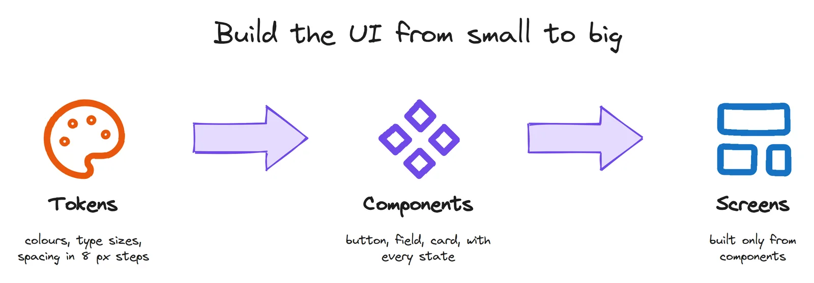
Tokens
- Colour: one main colour for actions, a set of neutrals for text and backgrounds, and three signal colours: red for errors, green for success, amber for warnings. That's usually enough.
- Type: pick five or six sizes and use only those, for example 14, 16, 20, 24, 32 and 40 px. One or two typefaces.
- Spacing: use steps of 8 px (8, 16, 24, 32, 48...), with 4 px for tight spots. Even spacing is most of what makes a page look "designed".
Components, with every state
A button isn't one drawing. It's default, hover, pressed, focused (for keyboard users), disabled and loading. A form field also has a filled state and an error state. Design the empty state too: what does a list look like before it has anything in it? Most "unfinished" apps are missing exactly these.
The rules with numbers
| Rule | Number | Why |
|---|---|---|
| Body text on phones | 16 px or more | Smaller text is hard to read, and phone browsers may zoom in on small form fields |
| Text contrast | at least 4.5:1, large text 3:1 | WCAG 2.2, level AA. Light grey on white usually fails |
| Tap targets | 44 × 44 or more | Apple asks for 44 × 44 pt, Google's Material for 48 × 48 dp. WCAG 2.2's minimum is 24 × 24 px |
| Line length | about 45 to 75 characters | Longer lines make it hard to find the start of the next one |
| Main button | one per screen | Two equally loud buttons make people stop and think |
| Colour alone | never the only signal | An error needs words or an icon too, for colour-blind users and bright sunlight |
One more rule, from Nielsen Norman Group, called Jakob's law: people spend most of their time on other sites, so they expect yours to work like those. Put the logo where logos usually are, and the menu where menus usually are. Be original in your content, not in where the buttons are.
Step 7: Prototype, and test with 5 people
A prototype is anything people can click: linked wireframes in Figma, or a small coded demo. Here is one of mine: a booking demo for a made-up clinic (in Russian). You pick a service, a doctor, a day and a time, confirm, and then see the messages the bot would send. Nothing is saved. I built it so clinic owners can try the flow before any work starts, which is exactly what a prototype is for.
How to run a test
- Find 5 people who match your persona. Not your colleagues, not people who saw the project grow.
- Give tasks as goals, not instructions. "Book a cleaning for Tuesday evening", not "Click the Book button".
- Ask them to think aloud, then stay quiet. Don't help. When they ask "should I click here?", answer "what would you do if I weren't here?"
- Write down where they stopped, what they expected, and what they said.
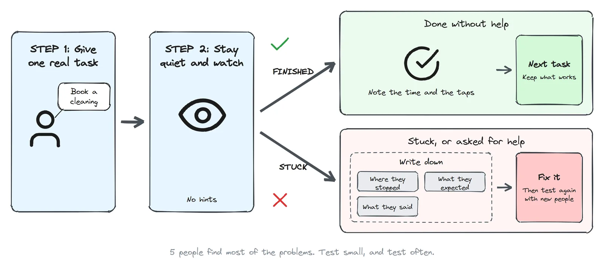
Why five? In 2000, Jakob Nielsen showed that testing with about five users finds roughly 85% of the usability problems, and that each extra person finds fewer new ones. His advice: run several small tests instead of one big one. Test with five, fix, then test again with five new people.
Fix in order of damage. Something that stops people from finishing the task comes first. Something that only slows them down comes next. Opinions about colours come last.
A quick self-check: Nielsen's 10 heuristics
No users available today? Go through your screens with these ten rules from Jakob Nielsen. The questions in the right column are examples for a booking page.
| Heuristic | Ask yourself |
|---|---|
| 1. Visibility of system status | After "Book", does the person see that it worked? |
| 2. Match with the real world | Do you say "check-up" or "primary consultation"? |
| 3. User control and freedom | Can they go back a step without losing what they chose? |
| 4. Consistency and standards | Do all main buttons look the same? |
| 5. Error prevention | Can they pick a time that's already taken? |
| 6. Recognition rather than recall | Is the chosen service still visible on the time screen? |
| 7. Flexibility and efficiency | Can a returning patient book again in two taps? |
| 8. Aesthetic and minimalist design | Is there anything on the screen nobody needs for this task? |
| 9. Help users recover from errors | Does the error say what to fix, in plain words? |
| 10. Help and documentation | Is the phone number one tap away when they're stuck? |
Step 8: Build, launch, and keep measuring
- Hand-off: your tokens become CSS variables and your components become code components. Write down the states and the edge cases: empty, error, very long names, slow internet.
- Before launch: test on a real phone, not only in the browser's phone mode. Check contrast and keyboard use. Check speed: Google counts a page as good when the main content shows within 2.5 seconds (Largest Contentful Paint).
- After launch: track each step of your user flow as an event, so you can see where people drop off. Free session recordings show you why: Yandex Metrica has Webvisor, and Microsoft has Clarity.
- Then go round the loop again. The biggest drop-off in your data is your next Define step.
Two related posts: how to get found on Google and in ChatGPT, and how to make an AI-built app secure.
How I score a page before anyone sees it
For every clinic demo I build, a script measures the page in a real browser at laptop and phone width, and then I score what a script can't see. The result is one number out of 10. Design weighs most, because a demo is seen once, by an owner deciding in seconds.
| Criterion | Weight | What 10 out of 10 means |
|---|---|---|
| Visual design | 20% | Calm, consistent, looks like a place you'd trust |
| First screen | 15% | In 5 seconds: what, for whom, where, and why book now |
| Path to booking | 15% | A booking button on the phone's first screen, tap-to-call, booking in a couple of taps |
| Visual hierarchy | 12% | Headline, then proof, then action; one main button per screen |
| Phone usability | 10% | No sideways scroll, tap targets 44 px or more, body text 16 px or more |
| Trust | 10% | Real doctors, licence, rating, real reviews, real photos, address |
| Readability | 8% | All text passes contrast, short lines |
| Patient information | 5% | Services, prices, hours, address |
| Speed | 3% | Main content in under 2.5 s on a phone, nothing jumps |
| Accessibility basics | 2% | Alt text, page language, labelled fields, one main heading |
A demo goes to a clinic owner only at 8.5 or above. One of my early demos scored 8.4, just under the bar. One of the things the script caught was boring: body text was 14.5 px on a phone, and my eye had missed it. That's exactly why I measure instead of trusting my eye.
The mistakes I see most
- Starting with the logo and colours. They matter, but they can't fix a wrong structure.
- Designing for yourself. You know where everything is. Your users don't.
- Asking "would you use this?" Everyone says yes. Watch what they do instead.
- Too much in version 1. Every extra feature is another thing to design, build, test and explain.
- Desktop first. Then the phone version becomes a squashed afterthought.
- Testing with friends. They're kind, and they already know what you meant.
- Light grey text on white. It looks elegant on your big screen and disappears in the sun.
- Long forms and captchas in front of the one action that matters.
- Hiding prices. People leave to find them elsewhere, or arrive afraid of the bill.
- No error, loading or empty states. The app works in the demo and confuses everyone in real life.
- Shipping the first idea. That's skipping the second diamond.
Your first week, from zero
Here is the whole process squeezed into seven days. A real project takes longer. What matters is the order.
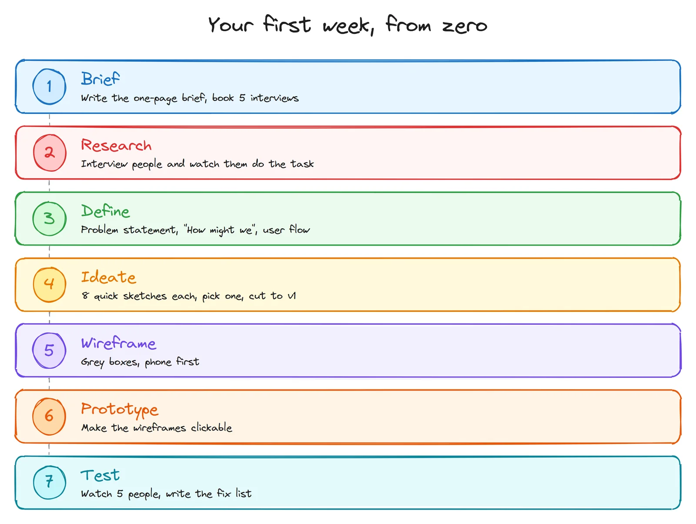
Learning UI/UX? Turn this into a portfolio piece
- Pick a real problem. A local business with an old website is perfect: a clinic, a café, a repair shop. Call it a concept, and never present it as their official site.
- Do every step above, even if your research is three people and an afternoon.
- Write it up as a case study: the problem, what you found, the options you considered, what you chose and why, what the test showed, and before and after.
- Show the process, not only the final screens. People who hire designers want to see how you think. Your sticky notes and ugly sketches are proof.
Everything in this post can be done with free tools: paper, Excalidraw, Figma's free plan or Penpot, and free analytics.